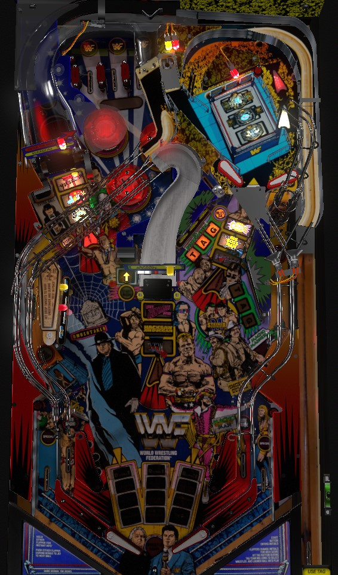

Not to be confused with Wrestlemania the Pinball or Legends of Wrestlemania (Stern Pinball, 2015), which are other pro-wrestling themed pinball tables.
Like many games from 1992-94, WWF is all about either playing lots of modes as quickly as possible or excelling in multiball. Light modes by shooting the center ramp; start modes at the left scoop or center scoop, each located to the left of a nearby ramp. For multiball, shoot lit ramps or the right orbit to collect wrestlers, then shoot the Macho Man lane in the lower right (for any multiball) or the left ramp (first multiball only) to start. The upper playfield is best used for its drop targets, which advance bonus multiplier (single ball play) or raise jackpots (in multiball).
The skill shot comes in two parts. Part 1 is to time your press of the Tag plunge button to choose which of the three displayed awards you would like to receive for free. Part 2 is to use lane change with either flipper to move the flashing lane so that the ball goes through it. Making part 2 of the skill shot scores 10,000,000 points the first two times, and 20,000,000 points any time after that.
These are the possible awards that can appear in part 1:
The manual also indicates possible award of Tag Bonus, Spot 3 Wrestlers, 20 Million, and Lite X-Ball, though I have never seen any of these come up in-game. If the game is set to Tournament Mode, the three options will always be 3X Mult, Pop Bonus, and 10 Million.
There are 9 modes displayed in a 3x3 grid near the flippers. The flashing mode is the next one that will be started. The three columns correspond to the left ramp, center ramp, and right orbit. If you don't want the currently flashing mode, shoot the shot corresponding to a different column than the flashing one to move the flashing mode to that column. You can also shoot the shot corresponding to the column that is currently flashing to select another mode in that column. Shooting a shot whose column is full of 3 already-played (solidly lit) modes does nothing to the flashing mode's position.
Modes are started at the left scoop and center scoop, which are positioned to the left of the left ramp and center ramp, respectively. Both scoops are lit to start a ball, and both unlight whenever a mode is started. The right in lane briefly lights the left scoop if it is not lit. Shooting the center ramp once will relight the left scoop indefinitely, and shooting the center ramp twice will also relight the center scoop indefinitely. I believe that any mode can stack with any other mode, but if Royal Rumble Multiball is started, all active mode(s) instantly end.
Left column, top to bottom
Center column, top to bottom
Right column, top to bottom
After playing all 9 modes, the next shot to a lit mode start scoop starts the game's wizard mode, which is simply titled Royal Rumble. Step 1 is to shoot the 3 Wrestler shots once each (left ramp, center ramp, right orbit). After that, 6-ball multiball begins, which is step 2. In Step 2, you must eliminate 9 wrestlers from the Royal Rumble: to eliminate a wrestler, hit 20 pop bumpers or complete the upper playfield drop targets. Scoring is unclear during this round, but my best guess is 20,000,000 per eliminated wrestler plus 1,000,000 per switch hit. After eliminating 9 wrestlers, step 3 begins; jackpots return to the left ramp, center ramp, and right orbit. The 3 jackpots are worth 30,000,000 each, and unlight once collected; collecting all 3 jackpots relights them all and increases their value by 10,000,000. This can be done repeatedly, but the jackpot will stop growing at 90,000,000. There is some ball save at the beginning of both steps 1 and 2, but not as much as other games' wizard modes from the mid-90s. Royal Rumble wizard mode ends as soon as single ball play resumes. After Royal Rumble ends, all mode columns unlight and progress resets so everything can be played again.
Wrestlers are collected at the three major shots: left ramp, center ramp, and right orbit. Collect all 9 to start multiball. For the first multiball, you can collect any wrestler in any order. For the second multiball, you need to collect the first wrestler from each shot before any 2nd wrestlers are available, but you can collect the wrestlers within a level in any order. Starting with the 3rd multiball, you always need to collect wrestlers in the order left ramp -> center ramp -> right orbit -> repeat. Once all wrestlers are collected, shoot the Macho Man lane in the lower right to pop up to the upper playfield and start multiball. On the first multiball only, you can also start multiball at the left ramp.
Jackpots can be raised before multiball making 5 shoots to the right loop during one trip to the upper playfield. This adds 5,000,000 points to all jackpots in the next multiball and can be done multiple times.
Multiball starts with 3 balls. In multiball, jackpots are at the wrestler shots. All three wrestler shots will be lit for the wrestler, but only one will be lit for jackpot. Collecting the jackpot moves it to a different available wrestler shot. You can collect non-wrestler jackpots, but all this does is cause you to lose points, because fewer jackpots will be available before super jackpots are ready. The first jackpot in multiball is worth 20,000,000 points; each subsequent jackpot is 5,000,000 more than the previous, and completing the upper playfield drop targets in multiball increases all jackpots by 5,000,000. If a total of 20 seconds pass in multiball where no jackpots were collected and the flippers were not held up, a bell will ring and one new pinball will be added to the playfield. There is no ball save for these added balls.
Once all 9 wrestlers have been recollected, whether they scored jackpots or not, super jackpots become available. The super jackpot value is as much as 100,000,000 points; this value decreases by 10,000,000 for every second that a flipper is held, but increases by 10,000,000 for every second a flipper is not held. Complete the upper playfield drop targets to light super jackpot, and collect it at the top hole to the left of the upper playfield drop targets. Repeatedly collect super jackpots until multiball ends.
If multiball ends with no jackpots collected, it can instantly be restarted within 15 seconds at the Macho Man lane (or the left ramp, if it's the first ball of the game being restarted). Starting multiball on ball 1 always awards a 10,000,000 point bonus, even if you start multiball on ball 1 more than once or you are on one of ball 1's extra balls.
Get Back In The Ring: if the ball comes down the lane behind the left drop targets, you'll have 15 seconds to "get back in the ring" by shooting up the lane behind the left drop targets. This scores a progressive jackpot that starts at 10,000,000 points, builds across players and games, and never really seems to be worth more than about 20,000,000 points, meaning the shot is too difficult to justify dropping everything to collect it.
Chair Bashing: if the ball goes up the lane behind the left drop targets whenever Get Back In The Ring is not running, a video mode starts mid-ball. Hit the Tag launch button as many times as you can within about 5 seconds to beat your opponent with a chair and score points. The first 5 hits score 1,000,000 points each, and every hit after that scores 500,000; however, if either flipper button is being held up, these score values are divided by 10. This mode is usually only worth 7,000,000-10,000,000 points and can generally be ignored.
RIP Jackpot: complete the left bank of drop targets when Raise the Dead mode is not running to earn a letter in RIP. Complete RIP to score the RIP Jackpot. The RIP Jackpot starts at 15,000,000 points and definitely increases by 100,000 each time a drop target is knocked down, but other factors also raise the jackpot that I have not figured out for certain. The RIP Jackpot is progressive and builds across players and games.
Tag targets and captive ball: hit a Tag standup target to light it. Light Tag in either bank to start a Tag Your Partner hurry-up, where hitting the Tag launch button 3 times within about 3 seconds scores a 5,000,000 point bonus. Lighting Tag in both banks also lights the captive ball for Collect Tag, which can give 10,000,000 points, 20,000,000 points, or hold bonus.
Macho Madness: shooting a ramp, the Macho Man lane, or the top hole on the upper playfield when they are not lit for anything else scores a letter in Macho Man. Lighting the word Macho instantly starts the flashing main mode. Completing Macho Man starts Macho Madness. Shoot to the upper playfield within 25 seconds, then try to complete drop targets. Once you hit down the first target, you have 3 seconds to complete the bank, which scores 15,000,000 points and a belt; whether you succeed or fail, you move on to the next belt. 3 belts occur in this fashion. After 3 belts, shoot the right orbit of the upper playfield to collect a hurry-up that starts at 20,000,000 points and rather quickly counts down to 5,000,000 before timing out.
WWF Royal Rumble has a conventional in/out lane setup. The left in lane is labelled as "Lite Macho" but this doesn't seem to do anything, whether lit or not. The right in lane is lit for "Lite Mode" whenever the left scoop is not lit for a mode start; the right in lane will then briefly qualify the left scoop for a few seconds. Out lanes can be lit for specials, but I don't know how; no amount of super jackpots in multiball or progress in Royal Rumble wizard mode seems to activate them. There is a center peg between and below the flippers.
The end of ball bonus calculation consists of a "switch bonus" (10,000 points per switch?) multiplied by the bonus multiplier, plus 1,000,000 points per wrestler earned toward multiball(s) on that ball only. Bonus multiplier is increased by 1 at a time each time the top lanes are completed, or the upper playfield drop targets are completed outside of a mode or multiball that uses the upper playfield. Max bonus multiplier is 9x. Advancing the bonus multiplier past 9x awards hold bonus, which keeps your switch bonus and multiplier for your next ball, but not your wrestler count. Advancing the bonus multiplier past hold bonus lights extra ball at the left scoop. Every top lanes or upper drops completion after lighting extra ball scores 5,000,000 points. Hold Bonus can also be given as a random award from the lit captive ball after completing both banks of Tag standup targets. If hold bonus is not collected, switch bonus and multiplier are reset to nothing at the start of each ball. There is no mid-ball bonus collect. Bonus tends not to be a significant portion of scoring.